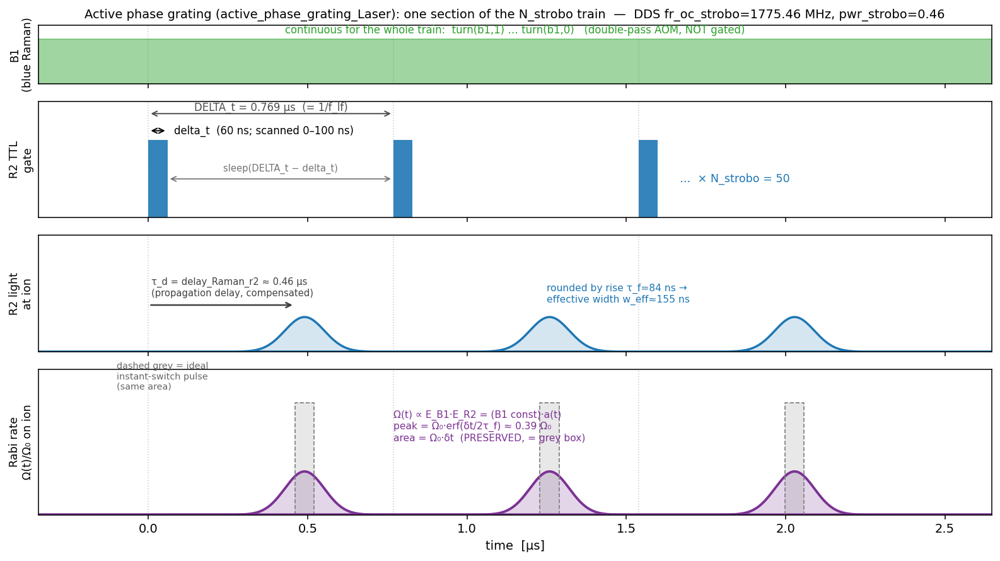
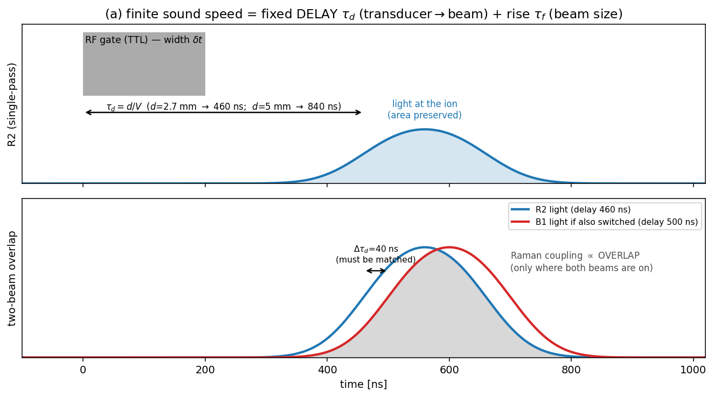
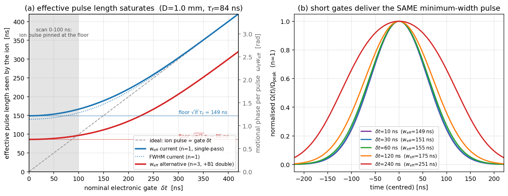
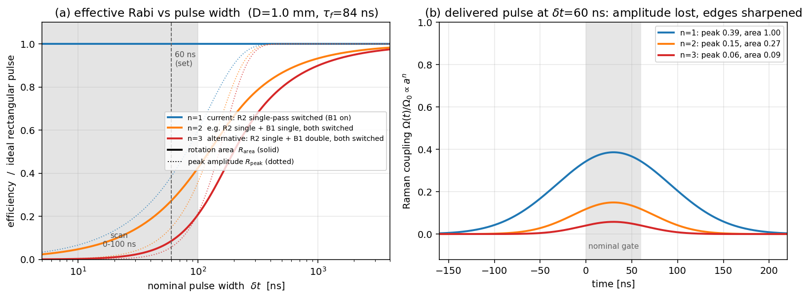
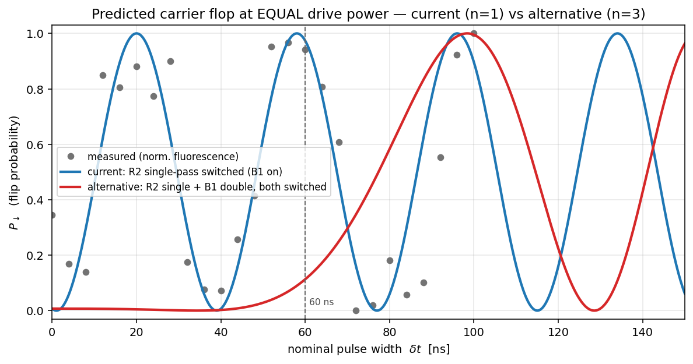
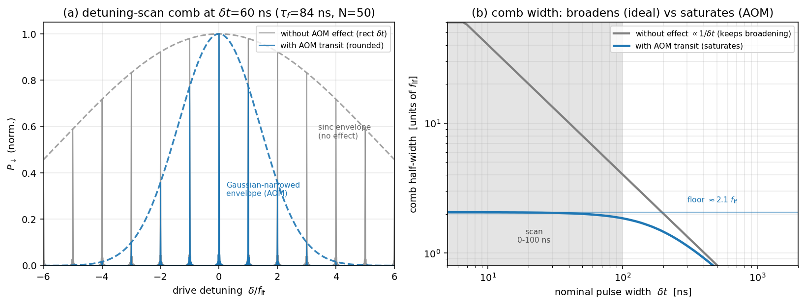
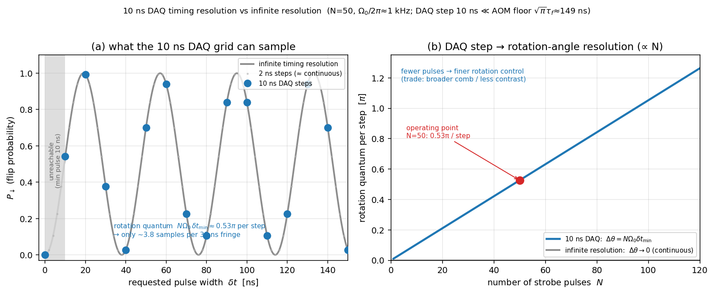

Finite acoustic-transit effects on the stroboscopic R2 Rabi rate — single- vs double-pass switching
Technical note, 2026-06-25. How the finite speed of sound in the
Raman-beam AOM shapes the effective Rabi drive of the Strobo2.0 "active
phase grating", why switching only the single-pass R2
beam preserves the spin-rotation area (so the ion still
flops), why the ion nevertheless sees an effectively longer
pulse whose width saturates at a hard floor, and what would
change if the B1 (double-pass) AOM were switched too. All numbers are
computed in docs/figures/make_aom_rise_figs.py;
device constants come from the AOM datasheet (intraaction_asm2202b3
→ sources/spec sheets/intraact_aom220uv_specs.pdf).
The sequence is the decoded control script of sources/data/Strobo2.0/1_FlopN_3p3_2p2_PDQ_displ_strobo/.
Plain-language overview (read me first)
An acousto-optic modulator (AOM) switches a laser beam by launching an ultrasonic wave across it: the sound wave is a moving diffraction grating that deflects ("switches on") the light. The catch is that sound is slow (≈ 6 mm/µs in fused silica), so the grating cannot appear or disappear instantly — it has to travel across the beam. Two consequences follow, both set by distances inside the AOM divided by the sound speed:
- a fixed delay — the sound must first travel from the transducer to where the beam sits (a few mm → hundreds of ns) before any light switches; and
- a finite rise/fall — once it arrives, the grating still takes the beam-crossing time (≈ beam size / sound speed ≈ 100 ns here) to fully cover the beam.
In the Strobo2.0 grating we chop one Raman beam (R2, on a single-pass AOM) into a train of short pulses while the other beam (B1) stays on. This note shows the surprising-but-true result that, because only one beam is chopped, the area of each light pulse — and hence the spin rotation it produces — is preserved even for pulses far shorter than the rise time; the slow turn-on is exactly cancelled by an equally slow turn-off tail. What is not preserved is the shape: the ion sees a low, broad, lengthened pulse whose width cannot be pushed below a floor of ≈ 150 ns no matter how short we make the electronic gate. We then compute what happens in an alternative where B1 (a double-pass AOM) is also switched — there the rotation area collapses at short pulses, because each diffraction event multiplies the suppression.
Notation
| symbol | meaning | value here |
|---|---|---|
| \(V\) | acoustic velocity in the AOM medium (fused silica) | 5.95 mm/µs (datasheet) |
| \(D\) | optical beam diameter (\(1/e^2\) intensity) in the AOM | ~1 mm (aperture height 2 mm) |
| \(w=D/2\) | beam \(1/e^2\) intensity radius / field \(1/e\) radius | ~0.5 mm |
| \(\tau_f=w/V=D/2V\) | field rise time constant (beam-crossing) | 84 ns (D=1 mm) |
| \(T_r=0.64\,D/V\) | datasheet 10–90 % intensity rise time | 110 ns (D=1 mm) |
| \(\tau_d=d/V\) | propagation delay, transducer→beam (\(d\) = standoff) | 460–840 ns (see §1) |
| \(\delta t\) | nominal electronic gate width (the scanned variable
delta_t) |
0–100 ns (this file) |
| \(\delta t_{\min}\) | DAQ timing step (smallest realizable gate / increment) | 10 ns |
| \(\Delta_t\) | strobe period (= lf motional period \(1/f_{\rm lf}\)) | 0.769 µs |
| \(N\) | number of strobe pulses (N_strobo_OC_lf_PDQ) |
50 |
| \(f_{\rm lf}\) | low-frequency axial mode | 1.300 MHz |
| \(a(t)\) | single-pass diffracted field envelope, normalised to 1 | — |
| \(n\) | number of switched diffraction-amplitude factors | 1 (current) … 3 (alt.) |
| \(\Omega_0\) | two-photon carrier Rabi rate at full diffraction | ~2π·0.5 MHz (from data) |
0. The sequence (what is switched)
From the decoded control script
(active_phase_grating_Laser(b1, r2, …),
sel==1):
set_dds(dds_strobo, fr_oc_strobo, phase, pwr_strobo);
turn(b1, 1); // B1 ON for the whole grating (continuous)
sleep((N_max - N_strobo) * DELTA_t);
for (i = 1; i < N_strobo + 0.5; i++){
sleep(DELTA_t - delta_t);
turn(r2, 1); sleep(delta_t); turn(r2, 0); // R2 chopped: ON for delta_t, N times
}
turn(b1, 0);The drive is a two-photon stimulated-Raman carrier (B1 + R2). The two-photon Rabi rate is the product of the two single-beam fields at the ion, \(\Omega(t)\propto E_{\rm B1}(t)\,E_{\rm R2}(t)\). B1 is continuous (\(E_{\rm B1}=\) const); only R2 is switched. This single fact drives the entire analysis below.
The figure maps the script parameters onto one section of the \(N_{\rm strobo}\) train — B1 (always on),
the R2 TTL gate (width delta_t, period
DELTA_t; the literal control signal, dotted guides mark the
gate times), the delivered R2 light (shifted one propagation delay \(\tau_d=\) delay_Raman_r2 to
the right of its gate and rounded by the rise \(\tau_f\)), and the Rabi rate the ion
actually sees (\(\Omega\propto E_{\rm
B1}E_{\rm R2}\propto a(t)\), with the ideal instant-switch pulse
in dashed grey for comparison — same area, §3):

1. Three distinct finite-sound-speed effects
Decompose the geometry inside the AOM into three independent length scales ÷ \(V\):
| effect | length scale | timescale | what it does |
|---|---|---|---|
| propagation delay \(\tau_d\) | transducer→beam standoff \(d\) (~3–5 mm) | 460–840 ns | rigid time-shift of the whole pulse |
| rise/fall \(\tau_f\) | beam size \(w=D/2\) (~0.5 mm) | 84 ns | rounds + lengthens the pulse, drops its peak |
| pass multiplicity \(n\) | optical passes × beams switched | — | sets whether area survives short pulses |
The propagation delay \(\tau_d\)
The acoustic wave is launched at the transducer and must travel the
standoff distance \(d\) to the beam
before any light appears: \(\tau_d =
d/V\). For the "typical ~5 mm" standoff this is \(\tau_d = 5\,{\rm mm}/(5.95\,{\rm mm/µs}) \approx
\mathbf{840\ ns}\). The apparatus standoff is actually a bit
smaller — the script's compensated delays are
delay_Raman_r2 = 0.46 µs and
delay_Raman_b1 = 0.50 µs, i.e. \(d_{\rm R2}\approx 2.7\) mm, \(d_{\rm B1}\approx 3.0\) mm.

Key points (figure above):
- \(\tau_d\) is a pure delay — both the on-edge and the off-edge are shifted by the same \(\tau_d\), so it does not change the pulse shape or area. It just means the light arrives \(\tau_d\) after the TTL gate. It must be (and is) compensated in the pulse timing.
- The dangerous part is the differential delay between the two Raman beams, \(\Delta\tau_d = (d_{\rm B1}-d_{\rm R2})/V \approx 40\) ns here. The Raman coupling exists only where both beams overlap in time; a mismatched \(\Delta\tau_d\) shifts R2's pulse off B1 and kills the overlap.
- In the current grating B1 is
continuous (turned on once for the whole train), so the
40 ns differential is harmless — it is absorbed by the long initial
B1-on wait (\((N_{\max}-N_{\rm
strobo})\Delta_t\approx 38.5\) µs) and only R2's (constant) delay
matters. The grating loop uses plain
turn(beam2, …), notturn_2_Raman_AOMs— that staggered two-beam helper is what the ordinary Raman pulses use (rtpulse_new) and is exactly what the alternative (§4) would need, where gating B1 too makes \(\Delta\tau_d\) a live, per-pulse alignment requirement.
2. The rise model (anchored to the datasheet)
A single rising acoustic edge sweeps the Gaussian beam, so the diffracted field rises as an error function. For a gate that turns the RF on at \(t=0\) and off at \(t=\delta t\), the delivered single-pass field envelope is a rounded box:
\[\boxed{\,a(t)=\tfrac12\!\left[\operatorname{erf}\!\frac{t}{\tau_f}-\operatorname{erf}\!\frac{t-\delta t}{\tau_f}\right],\qquad \tau_f=\frac{w}{V}=\frac{D}{2V}\,}\]
Two exact properties of this rounded box (both proved by direct integration):
- Peak: \(a_{\rm peak}=\operatorname{erf}\!\big(\delta t/2\tau_f\big)\) — drops well below 1 once \(\delta t\lesssim T_r\).
- Area: \(\displaystyle\int a(t)\,dt = \delta t\) exactly, for any \(\delta t\) — the slow turn-on is identically compensated by the equally slow turn-off tail.
Cross-check against the datasheet: the model's intensity (\(a^2\)) 10–90 % rise is \(\approx 0.75\,D/V\) (= 125 ns at D=1 mm), versus the datasheet's \(T_r = 0.64\,D/V\) (= 110 ns). The ~15 % difference is the known coherent-field vs geometric-power convention; both agree that the relevant timescale is the beam-crossing time \(\sim D/V \sim 0.1\) µs.
3. Single-pass switching (current scheme): area is preserved, the pulse is lengthened
Because only R2 is switched and the Raman rate follows the field of the switched beam, \(\Omega(t)\propto a(t)\) (exponent \(n=1\)). Therefore the rotation per pulse is preserved:
\[\theta_{\rm pulse}=\Omega_0\!\int a(t)\,dt=\Omega_0\,\delta t\quad\text{(independent of }\tau_f).\]
So the stroboscopic flop in \(\delta t\) stays linear in \(\delta t\) down to \(\delta t\to 0\) — there is no first-order Rabi-rate reduction of the spin response. The data are consistent with this and rule out the strongly-suppressed alternative (§5).
But the ion does not see a \(\delta t\)-long pulse. With the area pinned at \(\delta t\) and the peak suppressed to \(a_{\rm peak}\), the pulse is spread out. The natural "equivalent-rectangle" width is
\[w_{\rm eff}(\delta t)=\frac{\int a\,dt}{a_{\rm peak}}=\frac{\delta t}{\operatorname{erf}(\delta t/2\tau_f)}\;\xrightarrow[\delta t\to 0]{}\;\sqrt{\pi}\,\tau_f .\]
The effective pulse length saturates at a floor \(\sqrt{\pi}\,\tau_f\approx 1.77\,\tau_f\approx \mathbf{149\ ns}\) (D=1 mm). No matter how short the electronic gate, the ion sees a pulse at least ~150 ns wide.

| \(\delta t\) (gate) | peak \(a_{\rm peak}\) | area / \(\delta t\) | \(w_{\rm eff}\) | FWHM |
|---|---|---|---|---|
| 10 ns | 0.067 | 1.00 | 149 ns | 140 ns |
| 30 ns | 0.199 | 1.00 | 151 ns | 141 ns |
| 60 ns | 0.386 | 1.00 | 155 ns | 146 ns |
| 100 ns | 0.600 | 1.00 | 167 ns | 157 ns |
| 200 ns | 0.936 | 1.00 | 220 ns | 214 ns |
| 1000 ns | 1.000 | 1.00 | 1000 ns | 1000 ns |
Consequence for the grating: the strobe "kick" is
not δ-like. At the floor the pulse smears over a
motional phase \(\omega_{\rm lf}\,w_{\rm eff}
= 2\pi f_{\rm lf}\cdot 149\,{\rm ns}\approx \mathbf{1.2\ rad}\)
per pulse — a sizeable fraction of a motional period. This is exactly
the in-pulse motional-sampling term flagged as the leading approximation
in strobo_sim /
the transfer-function
note; the AOM rise sets a hard lower bound on how
impulsive the kicks can be, independent of the DAQ's 10 ns timing
resolution.
4. Alternative: also switch B1 (double-pass) — the rotation area collapses
In a double-pass AOM the light traverses the same acoustic grating twice, so its field picks up the diffraction amplitude squared: \(E_{\rm B1}^{\rm (2pass)}(t)\propto a(t)^2\). If B1 is also gated, the Raman rate carries three switched diffraction factors:
\[\Omega_{\rm alt}(t)\propto \underbrace{a(t)}_{\text{R2 single}}\cdot \underbrace{a(t)^2}_{\text{B1 double}}=a(t)^{\,3}\qquad(n=3).\]
Generally \(\Omega(t)\propto a(t)^n\) with \(n\) = number of switched amplitude factors (current \(n{=}1\); switch both single-pass \(n{=}2\); R2 single + B1 double \(n{=}3\)). The rotation area is now
\[R_{\rm area}(\delta t)=\frac{1}{\delta t}\!\int a^n\,dt,\qquad R_{\rm area}\xrightarrow[\delta t\to0]{}\;\propto\!\Big(\tfrac{\delta t}{\tau_f}\Big)^{\,n-1}.\]
Each extra switched diffraction factor costs one more power of \((\delta t/\tau_f)\) at short pulses: \(n{=}1\) is flat (preserved), \(n{=}2\) falls \(\propto\delta t\), \(n{=}3\) falls \(\propto\delta t^2\).

| \(\delta t\) | \(R_{\rm area}\), \(n{=}1\) (current) | \(R_{\rm area}\), \(n{=}2\) | \(R_{\rm area}\), \(n{=}3\) (alt.) | peak \(n{=}3\) |
|---|---|---|---|---|
| 10 ns | 1.00 | 0.05 | 0.003 | 0.0003 |
| 30 ns | 1.00 | 0.14 | 0.023 | 0.008 |
| 60 ns | 1.00 | 0.27 | 0.086 | 0.058 |
| 100 ns | 1.00 | 0.43 | 0.209 | 0.216 |
| 200 ns | 1.00 | 0.69 | 0.504 | 0.580 |
| 1000 ns | 1.00 | 0.93 | 0.899 | 0.999 |
Trade-off. Switching both beams (and double-passing B1) makes each delivered pulse much sharper and gives much better extinction (the tails are \(a^3\) instead of \(a\), and the effective-length floor drops to \(\sqrt{\pi/3}\,\tau_f\approx 86\) ns). That is attractive for a clean Floquet comb. The price is steep: at the operating point \(\delta t=60\) ns the per-pulse rotation falls to ~9 % (\(n{=}3\)) of the single-pass value, so to recover the same flop you need ~11.6× more two-photon Rabi amplitude. With \(\Omega_{\rm full}\propto P_{\rm B1}\sqrt{P_{\rm R2}}\) that translates — depending on which power you raise — to ~5× more optical power in each beam if both are scaled together (\(\Omega\propto P^{3/2}\)), or ~12× in the double-pass B1 alone (\(\Omega\propto P_{\rm B1}\)), or ~130× in R2 alone (\(\Omega\propto\sqrt{P_{\rm R2}}\)). And the datasheet's \(\eta=\sin^2(\propto\sqrt{P})\) caps how far the power can be pushed before the AOM saturates/over-drives. Net: double-pass switching buys temporal sharpness and extinction at a large cost in rotation efficiency for sub-\(T_r\) pulses.
5. What the data say (the flop tracks \(n=1\))
The finest scan (10_22_22…, \(\delta t\) = 0–100 ns, \(N\)=50) shows a clean carrier flop
that oscillates with a roughly constant ~38 ns period in \(\delta t\) down to ~12 ns — the
signature of a rotation that is linear in \(\delta t\), i.e. area-preserved
(\(n{=}1\)). This is a strong
shape discriminator, not a peak-height claim: an \(n{=}3\) response (area \(\propto\delta t^3\) at small \(\delta t\)) would reach its
first fringe maximum only near ~95 ns, whereas the data
show ~3 full oscillations within 0–100 ns. The data are
therefore consistent with \(n{=}1\) and
rule out \(n{=}3\).

Overlaying the predicted carrier flop at equal drive
power, the measured points track the current (\(n{=}1\), blue) curve while the
alternative (\(n{=}3\),
red) barely reaches its first π by ~95 ns. Caveat — this is
a shape comparison, not a fit: the data are min–max-normalised
fluorescence (arb. units), the period is read from the fringe spacing
(~38 ns, not least-squares fitted), and the model phase is set by hand
to the prepared displaced state. A proper damped-cosine fit (free \(\Omega_0\), contrast, phase) with a
residual/\(\chi^2\) — and ideally a
global fit across the whole 0–1.2 µs delta_t campaign —
would turn this "consistent with / rules out" into a quantitative
confirmation; that is left as a follow-up.
5a. Does the ion's finite size / the 50 µm focus matter? (No)
A natural worry: the rise model lives in the AOM plane (beam \(D\!\approx\!1\) mm), but at the ion the R2 beam is refocused to a waist \(w_{\rm ion}\approx 50\) µm, while the ion's wavepacket is only \(x_{\rm zpf}\approx 12\) nm (\(^{25}\)Mg\(^+\) at \(f_{\rm lf}=1.300\) MHz — i.e. the "~10 nm" scale). Do we need to fold that in? No, by a wide margin:
- Scale separation. \(x_{\rm zpf}/w_{\rm ion}\approx 2.5\times10^{-4}\). The intensity varies across the ion by \(1-e^{-2(x/w)^2}\approx 1.2\times10^{-7}\) — the ion is a perfect point sampler of the beam. So the on-axis focal field \(a(t)\) we modelled (= \(\int\) aperture field) is exactly what the ion sees; finite ion size adds nothing to the Rabi magnitude.
- It is the wrong kind of coupling anyway. The
Gaussian-beam intensity-gradient coupling to motion is
\(\eta_I=x_{\rm zpf}/w_{\rm ion}\approx
2.5\times10^{-4}\), about 6 400× weaker than the
optical Lamb–Dicke recoil \(\eta=k_{\rm eff}x_{\rm zpf}\approx 0.39\)
that already drives the grating (and is in
strobo_sim). The 50 µm focus is essentially flat over the motion. - Transient focal-spot distortion during the ~150 ns rise (the AOM aperture is partly filled → the focus broadens/shifts) affects the on-axis amplitude, which is already in \(a(t)\); the residual lateral spot shift is a small fraction of 50 µm — still ~5 000× the ion — so the ion remains a point sampler. The RF frequency is fixed (gated, not swept), so there is no steady beam-steering shift of the spot on the ion. Net: at most a bounded few-% amplitude wobble confined to the rise window, not an area effect.
So keep the point-ion, on-axis \(a(t)\) treatment; the 50 µm-vs-10 nm scale separation makes the ion's finite size irrelevant here.
5b. Frequency-domain fingerprint: the detuning-scan comb
The cleanest experimentally traceable signature is in the detuning scan, because the delivered pulse shape and the comb are Fourier conjugates. In the weak-pulse / linear-response limit (\(\theta\ll1\) per pulse, total \(N\theta\lesssim\pi\) — the regime where the spin amplitude is the linear sum of per-pulse contributions) a train of \(N\) identical pulses at period \(\Delta_t\), driven at detuning \(\delta\), gives a spin-flip probability that factorises:
\[P_\downarrow(\delta)\;\propto\;\underbrace{\Big|\tfrac{\sin(N\pi\delta\Delta_t)}{N\sin(\pi\delta\Delta_t)}\Big|^2}_{\text{array factor (the comb)}}\;\times\;\underbrace{|\tilde a(\delta)|^2}_{\text{single-pulse envelope}}.\]
The array factor is the same with or without the AOM effect: it places the comb teeth at \(\delta=k/\Delta_t=k f_{\rm lf}\) and sets their width \(\sim 1/(N\Delta_t)\). The AOM transit enters only through the single-pulse spectral envelope \(|\tilde a(\delta)|^2\), the Fourier transform of the delivered pulse:
\[|\tilde a(\delta)|^2=\underbrace{\operatorname{sinc}^2(\pi\delta\,\delta t)}_{\text{from the gate width}}\times\underbrace{\exp\!\big[-2\pi^2\tau_f^2\delta^2\big]}_{\textbf{AOM Gaussian roll-off}} .\]

- Without the effect (ideal rectangle): the envelope is a sinc, first zero at \(\delta=1/\delta t\). For short gates this is broad — at \(\delta t=60\) ns the comb carries strong teeth out to \(\pm 13\,f_{\rm lf}\); at \(\delta t=10\) ns out to \(\pm 100\,f_{\rm lf}\) (≈100 MHz). The number of resolved teeth grows \(\propto 1/\delta t\).
- With the AOM transit: the extra Gaussian factor has a \(1/e\) half-width \(\delta_{1/e}=1/(\sqrt2\,\pi\tau_f)\approx 2.1\,f_{\rm lf}\approx 2.7\) MHz, independent of \(\delta t\). It cuts the comb long before the sinc does, so the comb is Gaussian-narrowed and its width saturates — shrinking \(\delta t\) below ~370 ns does not broaden it (panel b). This is the exact Fourier mirror of the time-domain pulse-length floor (§3): a long, smooth pulse ⇔ a narrow, saturated comb.
How to see it / measure \(\tau_f\). Run the detuning scan at a few gate widths (e.g. \(\delta t\) = 10, 30, 60, 100 ns). Without the effect the comb keeps broadening; with it the comb stays pinned at \(\pm 2\)–\(3\) teeth for all of them. Quantitatively, the carrier-normalised tooth heights \(R_k=P_\downarrow(k f_{\rm lf})/P_\downarrow(0)=\operatorname{sinc}^2(\pi k f_{\rm lf}\delta t)\,e^{-2\pi^2\tau_f^2(k f_{\rm lf})^2}\) carry \(\tau_f\) directly: e.g. at fixed small \(\delta t\) the ratio of the \(|k|{=}2\) to the \(k{=}0\) tooth is \(\approx e^{-2\pi^2\tau_f^2(2f_{\rm lf})^2}\), a clean, drift-robust read of the beam size in the AOM (hence a cross-check of \(\tau_f=D/2V\) against the datasheet).
Relation to the propagator. strobo_sim
currently uses instantaneous pulses, so it produces the
bare comb with no single-pulse envelope (flat teeth, up
to the Fock/displacement structure). Finite \(\delta t\) multiplies in the sinc; the AOM
transit multiplies in the Gaussian. Because the envelope is
multiplicative and motion-independent (the weak-pulse
caveat above), it can be folded onto any comb the propagator
returns: the function aom_rise.comb_envelope
exists and is tested — wiring it onto the strobo_sim output
is a small follow-up (not yet done).
5c. DAQ timing resolution: the 10 ns step vs infinite resolution
Everything above treats \(\delta t\) as a continuous ("infinite-resolution") knob. The real sequencer can only set the gate in finite increments — the smallest reliable step is \(\delta t_{\min}=10\) ns — so the shortest realizable pulse is 10 ns and the achievable operating points lie on a 10 ns grid. This is a digital limit, entirely separate from the analog AOM physics, and it lands on a different axis:
- The AOM sets the pulse shape — the delivered pulse can't be narrower than the floor \(\sqrt{\pi}\,\tau_f\approx150\) ns (§3), no matter the timing.
- The DAQ sets the requested-width granularity — hence how finely the rotation can be dialled. Because the single-pass area is preserved, a 10 ns step is a faithful rotation quantum \(\Delta\theta = N\,\Omega_0\,\delta t_{\min}\).

At the operating point (\(N=50\), \(\Omega_0/2\pi\approx0.53\) MHz from the ~38 ns fringe) this quantum is \(\Delta\theta\approx0.53\,\pi\) per 10 ns step — so the flop is sampled at only ~3.8 points per fringe (panel a). With infinite resolution the flop is continuous; the 10 ns DAQ just undersamples it (barely above Nyquist) and cannot reach \(0<\delta t<10\) ns at all. Note the roles do not swap: infinite timing would not sharpen the pulse (that is the AOM's job) — it would only give continuous rotation control.
Three consequences worth keeping in mind:
- The 10 ns floor wastes nothing. At \(\delta t=10\) ns the AOM peak is only ~7 % of full, but the area is still \(\Omega_0\cdot10\) ns (preserved) — the smallest realizable pulse still delivers its full nominal rotation quantum, merely spread over ~150 ns.
- Finer rotation control ⇒ fewer pulses. \(\Delta\theta\propto N\) (panel b): halving \(N\) halves the quantum. The cost is a broader/weaker comb (tooth width \(\propto1/N\)), so it trades angle resolution against frequency selectivity and contrast. Lowering \(\Omega_0\) (drive power) does the same.
- Sub-10 ns scan structure is not trustworthy. The example file requests \(\delta t\) on a ~4 ns nominal grid (0–100 ns, 26 pts) — finer than \(\delta t_{\min}\) — so adjacent fine points fall within the timing quantization and the realized \(\delta t\) snaps toward the 10 ns grid; treat sub-10 ns differences as unresolved (a likely contributor to point-to-point scatter in the fine flop).
6. Summary
- The finite speed of sound enters as three scales: a delay \(\tau_d=d/V\) (~0.46–0.84 µs, a benign compensated shift — but the B1–R2 differential must be matched), a rise \(\tau_f=D/2V\) (~84 ns, the pulse-shaping scale), and the pass multiplicity \(n\).
- Because only the single-pass R2 is switched (\(n{=}1\)), the per-pulse rotation area is preserved (\(\int a\,dt=\delta t\)) — the slow turn-on is cancelled by the slow turn-off tail. The ion still flops cleanly and linearly in \(\delta t\), consistent with the data (which rule out \(n{=}3\)). There is no significant effective Rabi-rate reduction of the spin response in the current scheme.
- The ion nevertheless sees an effectively longer pulse, of width \(w_{\rm eff}=\delta t/\operatorname{erf}(\delta t/2\tau_f)\), which saturates at \(\sqrt{\pi}\,\tau_f\approx 150\) ns — a hard floor: sub-150 ns kicks are impossible with this beam size, and each kick smears ~1.2 rad of motional phase.
- Switching B1 (double-pass) too (\(n{=}3\)) collapses the rotation area as \((\delta t/\tau_f)^2\) (~9 % at 60 ns) in exchange for sharper, better-extinguished pulses. Only worthwhile if pulses are kept \(\gtrsim T_r\) or the power budget can absorb the ~10× hit.
- To get genuinely shorter, sharper kicks without the efficiency collapse, shrink the beam in the AOM (\(\tau_f\propto D\)): focusing R2 to D≈0.3 mm drops \(\tau_f\) to ~25 ns and the floor to ~45 ns.
- Frequency-domain fingerprint (traceable): the detuning-scan comb keeps the same tooth positions (\(k f_{\rm lf}\)) but its envelope is the Fourier transform of the delivered pulse. The AOM adds a Gaussian roll-off of \(1/e\) half-width \(\approx 2.1\,f_{\rm lf}\) that is independent of \(\delta t\): the comb is narrowed and its width saturates instead of broadening as \(1/\delta t\). The carrier-normalised \(|k|{=}2\) tooth height is a direct, drift-robust read of \(\tau_f\) (the AOM beam size).
- DAQ 10 ns timing step (≠ the AOM, different axis). The sequencer quantises the requested width in \(\delta t_{\min}=10\) ns steps (min pulse 10 ns), which — via area preservation — quantises the rotation in steps \(\Delta\theta=N\Omega_0\delta t_{\min}\approx0.53\,\pi\) (here), i.e. only ~3.8 samples per flop fringe. Infinite resolution gives a continuous flop but would not sharpen the pulse (that is the AOM floor, ~150 ns ≫ 10 ns). Finer angle control ⇒ fewer pulses (\(\Delta\theta\propto N\)).
Provenance & reproduce
- Device constants:
intraaction_asm2202b3(ASM-2202B3 datasheet) — \(V=5.95\) mm/µs, \(T_r=0.64\,D/V\), fused silica, 220 MHz, 2 mm aperture. - Sequence & timings:
paula_strobo_2026.datheaders —DELTA_t,N_strobo_OC_lf_PDQ,delta_t,delay_Raman_{r2,b1},fr_r2=222 MHz; decodedactive_phase_grating_Laser. - Canonical model:
spike/engines/aom_rise.py(pure Python, no numpy — portable across numpy 1.x/2.x; note thatnumpy.trapzis removed in numpy ≥2.3 andnumpy.trapezoidis absent in numpy <2.0, so the model does its own integration). Tested inspike/test_aom_rise.py(area theorem, peak, width floor, comb envelope). - Figures & table:
python docs/figures/make_aom_rise_figs.py(matplotlib; imports the model above and reads the measured flop viaspike/datfile.py) →aom_strobe_sequence.png,aom_acoustic_delay.png,aom_single_vs_double_pass.png,aom_effective_pulse_length.png,aom_flop_single_vs_double_pass.png,aom_detuning_comb.png,aom_daq_resolution.png, and the numeric tableaom_rise_table.csv.
Caveats
Load-bearing assumptions (the "area preserved" and "hard floor" claims rest on these):
- Beam size \(D\) is not yet measured — the entire analysis scales linearly with \(D\) (\(\tau_f\propto D\), floor \(\propto D\)). \(D\) is taken as the \(1/e^2\) diameter ≈ 1 mm; "waist" could mean the radius (→ D≈2 mm, all timescales ×2), and the 2 mm sound-field aperture caps it. All numbers here are provisional until \(D\) (or \(\tau_f\)) is measured — the §5b \(|k|{=}2\) tooth-height method is the cleanest in-situ way to pin it. Scalings for D = 0.5/1/2 mm are in the script.
- Linear (un-saturated) diffraction is assumed, so
field \(\propto\) acoustic amplitude
and the on/off edges cancel cleanly. Near peak efficiency \(\eta=\sin^2(c\sqrt{P})\) the response
curves over and the rising/falling edges no longer cancel → a genuine
area loss appears even at \(n{=}1\). The size scales with the
working \(\eta\): at \(\eta_0\lesssim0.3\) the deviation from
linear is \(\lesssim\) few %, at \(\eta_0\to1\) it is order-unity.
pwr_strobo=0.46 /pwr_r2=0.425 are DAC drive settings, not calibrated efficiencies, so this cannot be bounded from the header alone — a scope trace of the diffracted R2 pulse (and its \(\eta\)) is needed to confirm the linear regime. - Symmetric on/off transients are assumed. If the RF switch/amplifier has different turn-on vs turn-off behaviour (or a phase chirp), the off-tail no longer mirrors the on-edge and the area theorem breaks at \(n{=}1\).
- Detuning-comb factorisation is weak-pulse (\(N\theta\lesssim\pi\)). At the working point
\(N\theta\approx\pi\) the product form
(§5b) is a good approximation for the tooth-height envelope but
not exact; the true comb comes from the full Floquet propagator (
strobo_sim).
Higher-order physical effects not in the on-axis field model (each would only reduce coupling / degrade extinction — they do not rescue the floor, and most are genuinely small here, but they bound the "hard" claims):
- Spatial-mode / Bragg walk-off during partial aperture fill (distorted/displaced focus) — second order given the 50 µm focus vs 10 nm ion (§5a), but it reduces overlap during the rise window.
- B1's own turn-on: B1 is continuous during the train but is switched on at the start, so the first one or two of the \(N{=}50\) R2 pulses may see B1 still ramping (its own \(\tau_f\)) — a small (\(\lesssim\) few %) first-pulse area/phase offset, neglected here.
- Acoustic attenuation/dispersion in fused silica at 220 MHz over the 3–5 mm path, and acoustic echoes from the crystal far face (round-trip \(\sim\)µs) leaking low-level diffraction into "off" windows.
- RF-switch/DDS settling and phase transients (fast, but the acoustic envelope is the optical beam convolved with the real RF step, not an ideal one).
- Beam clipping at the 2 mm aperture if the \(1/e^2\) tails are not fully passed (would steepen the rise and break the pure Gaussian-erf form), and zeroth-order / higher-order leakage setting the real extinction ratio.
- Thermal lensing/heating from pulsing the AOM (negligible duty here, listed for completeness).
This is a drive-shaping model; it does not include
motion during the pulse (that is strobo_sim's job) or
decoherence. The AOM spectral envelope
(aom_rise.comb_envelope) is a multiplicative,
motion-independent filter that can be folded onto the
strobo_sim comb — the function exists; the one-line wiring
into the propagator output is a small, untested follow-up, not yet
done.
notes/aom_finite_sound_velocity_rabi.md by docs/build_site.py (pandoc + MathJax). Data & docs CC-BY-4.0, code MIT. ← back to home